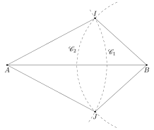
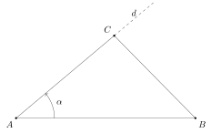
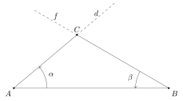
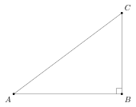
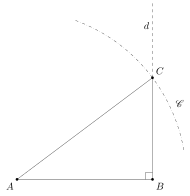
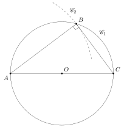
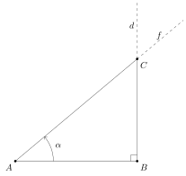
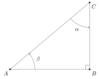
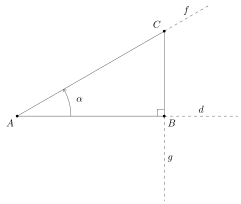
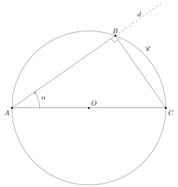

Eclats de vers : Matemat : Constructions de triangles
Table des matières
1. Triangles quelconques
1.1. Longueur des trois cotés
Le schéma ci-dessous représente la construction d’un triangle \(ABC\) dont on connaît les longueurs des trois côtés :

On connaît les longueurs \(\abs{AB}\), \(\abs{BC}\) et \(\abs{CA}\).
Voici les étapes de la construction :
- on trace le segment \([A,B]\) de longueur \(\abs{AB}\)
- on trace l’arc de cercle \(\mathscr{C}_1\) de centre \(A\) et de rayon \(\abs{AC}\)
- on trace l’arc de cercle \(\mathscr{C}_2\) de centre \(B\) et de rayon \(\abs{BC}\)
Le point \(C\) recherché se trouve à une distance \(\abs{AC}\) de \(A\) et à une distance \(\abs{BC}\) de \(B\). Il doit donc coïncider avec une des intersections de \(\mathscr{C}_1\) et de \(\mathscr{C}_2\). On a donc \(C = I\) ou \(C = J\). Une fois ce point \(C\) choisi, il ne reste plus qu’à tracer les segments \([A,C]\) et \([B,C]\).
Les triangles \(ABI\) ou \(ABJ\) vérifient donc tous deux les conditions de départ.
1.1.1. Isométrie
Par construction, les longueurs des côtés de triangles \(ABI\) et \(ABJ\) sont identiques. Par symétrie, les amplitudes de leurs angles sont également identiques. Pour s’en convaincre, il suffit de tracer un arc de cercle de rayon \(1\) et de centre \(A\) qui engloble les angles \(\angleflex{BAI}\) et \(\angleflex{JAB}\). On se rend compte que la portion de l’arc de cercle situé dans \(\angleflex{BAI}\) a la même longueur que la portion de l’arc de cercle situé dans \(\angleflex{JAB}\). Par définition, ces deux angles ont la même amplitude :
\[ \abs{\angleflex{BAI}} = \abs{\angleflex{JAB}} \]
On peut tenir un raisonnement analogue pour montrer que :
\[ \abs{\angleflex{IBA}} = \abs{\angleflex{ABJ}} \]
Les triangles \(ABI\) et \(ABJ\) ont donc deux angles de même amplitude. Comme la somme des trois angles de chaque triangle vaut 180°, les angles \(\angleflex{AIB}\) et \(\angleflex{BJA}\) sont donc également de même amplitude. On en conclut que \(ABI\) et \(ABJ\) sont isométriques.
1.2. Côté - angle - côté
Le schéma ci-dessous représente la construction d’un triangle \(ABC\) dont on connaît l’amplitude d’un angle et les longueurs des deux côtés qui l’entourent :

On connaît les longueurs \(\abs{AB}\) et \(\abs{AC}\) ainsi que l’angle :
\[ \alpha = \abs{\angleflex{A}} \]
Voici les étapes de la construction :
- on trace le segment \([A,B]\) de longueur \(\abs{AB}\)
- on trace la droite \(d\) passant par \(A\) et formant un angle d’amplitude \(\alpha\) avec \([A,B]\)
- on reporte sur \(d\) la distance \(\abs{AC}\) en partant du point \(A\), obtenant ainsi le point \(C\)
Il ne reste alors plus qu’à tracer les segments \([A,C]\) et \([B,C]\).
Remarque : on aurait pu partir vers le bas pour tracer la droite \(d\), obtenant ainsi un triangle isométrique à celui présenté sur le schéma.
1.3. Angle - côté - angle
Le schéma ci-dessous représente la construction d’un triangle \(ABC\) dont on connaît la longueur d’un côté ainsi que l’amplitude des angles qui l’entourent :

On connaît la longueur \(\abs{AB}\) ainsi que les angles :
\[ \alpha = \abs{\angleflex{A}} \]
\[ \beta = \abs{\angleflex{B}} \]
Voici les étapes de la construction :
- on trace le segment \([A,B]\) de longueur \(\abs{AB}\)
- on trace la droite \(d\) passant par \(A\) et réalisant un angle d’amplitude \(\alpha\) avec \([A,B]\)
- on trace la droite \(f\) passant par \(B\) et réalisant un angle d’amplitude \(\beta\) avec \([A,B]\)
- le point \(C\) recherché est l’intersection de \(d\) et \(f\)
Il ne reste alors plus qu’à tracer les segments \([A,C]\) et \([B,C]\).
Remarque : on aurait pu partir vers le bas pour tracer les droites \(d\) et \(f\), obtenant ainsi un triangle isométrique à celui présenté sur le schéma.
2. Triangle rectangle
2.1. Deux cathètes
Le schéma ci-dessous représente la construction d’un triangle rectangle \(ABC\) dont on connaît la longueur des cathètes :

On connaît les longueurs \(\abs{AB}\) et \(\abs{BC}\).
Voici les étapes de la construction :
- on trace le segment \([A,B]\) de longueur \(\abs{AB}\)
- on trace le segment \([B,C]\) de longueur \(\abs{BC}\) et perpendiculaire à \([A,B]\)
- on trace \([A,C]\) le dernier côté du triangle
Remarque : on aurait pu partir vers le bas pour tracer \([A,C]\), obtenant ainsi un triangle isométrique à celui présenté sur le schéma.
2.2. Cathète et hypothénuse
Le schéma ci-dessous représente la construction d’un triangle rectangle \(ABC\) dont on connaît les longueurs d’une cathète et de l’hypothénuse :

On connaît les longueurs \(\abs{AB}\) et \(\abs{AC}\).
Voici les étapes de la construction :
- on trace le segment \([A,B]\) de longueur \(\abs{AB}\)
- on trace la droite \(d\) perpendiculaire à \([A,B]\)
- on trace l’arc de cercle \(\mathscr{C}\) de centre \(A\) et de rayon \(\abs{AC}\)
- le point \(C\) recherché est l’intersection de \(d\) et de \(\mathscr{C}\)
Il ne reste alors plus qu’à tracer les segments \([A,C]\) et \([B,C]\).
Remarque : il existe une seconde intersection entre \(d\) et \(\mathscr{C}\), située en-dessous de \(B\). Choisir cette seconde intersection comme point \(C\) produit un triangle isométrique à celui présenté sur le schéma.
2.2.1. En utilisant le cercle circonscrit
Nous avons vu dans la section sur le diamètre du cercle circonscrit comme côté d’un triangle, que cette configuration produit toujours un triangle rectangle. Nous allons à présent tirer parti de cette propriété.
Le schéma ci-dessous représente la construction d’un triangle rectangle \(ABC\) dont on connaît les longueurs d’une cathète et de l’hypothénuse :

On connaît les longueurs \(\abs{AB}\) et \(\abs{AC}\).
Voici les étapes de la construction :
- on trace le segment \([A,C]\)
- on repère le point \(O\), au milieu de \([A,C]\)
- on trace le cercle \(\mathscr{C}_1\), de centre \(O\) et de rayon \(r = \abs{AC} / 2\)
- on trace le cercle \(\mathscr{C}_2\), de centre \(A\) et de rayon \(\abs{AB}\)
- le point \(B\) est l’intersection de \(\mathscr{C}_1\) et \(\mathscr{C}_2\)
Il ne reste alors plus qu’à tracer les segments \([A,B]\) et \([B,C]\).
Comme le côté \([A,C]\) est un diamètre du cercle circonscrit \(\mathscr{C}_1\), l’angle \(\angleflex{B}\) est automatiquement un angle droit et le triangle \(ABC\) est bien un triangle rectangle.
Remarque : il existe une seconde intersection entre \(\mathscr{C}_1\) et \(\mathscr{C}_2\), située en-dessous de \([A,C]\). Choisir cette seconde intersection comme point \(B\) produit un triangle isométrique à celui présenté sur le schéma.
2.3. Cathète et angle adjacent
Le schéma ci-dessous représente la construction d’un triangle rectangle \(ABC\) dont on connaît la longueur d’une cathète et l’amplitude d’un angle adjacent à cette cathète :

On connaît la longueur \(\abs{AB}\) ainsi que l’angle :
\[ \alpha = \abs{\angleflex{A}} \]
Voici les étapes de la construction :
- on trace le segment \([A,B]\) de longueur \(\abs{AB}\)
- on trace la droite \(d\) passant par \(B\) et perpendiculaire à \([A,B]\)
- on trace la droite \(f\) passant par \(A\) et formant un angle d’amplitude \(\alpha\) avec \([A,B]\)
- le point \(C\) est l’intersection de \(d\) et \(f\)
Il ne reste alors plus qu’à tracer les segments \([A,C]\) et \([B,C]\).
Remarque : on aurait pu partir vers le bas pour tracer les droites \(d\) et \(f\), obtenant ainsi un triangle isométrique à celui présenté sur le schéma.
2.4. Cathète et angle non adjacent
Le schéma ci-dessous représente la construction d’un triangle rectangle \(ABC\) dont on connaît la longueur d’une cathète et l’amplitude d’un angle non adjacent à cette cathète :

On connaît la longueur \(\abs{AB}\) ainsi que l’angle :
\[ \alpha = \abs{\angleflex{C}} \]
On en déduit directement l’angle adjacent à la cathète connue :
\[ \beta = 90^\circ - \alpha \]
Nous pouvons dès lors utiliser la technique de construction d’un triangle rectangle applicable lorsqu’on connaît une cathète et un angle adjacent.
2.5. Hypothénuse et angle
Le schéma ci-dessous représente la construction d’un triangle rectangle \(ABC\) dont on connaît la longueur de l’hypothénuse et l’amplitude d’un angle :

On connaît la longueur \(\abs{AC}\) et l’angle :
\[ \alpha = \abs{\angleflex{A}} \]
Voici les étapes de la construction :
- on trace la droite \(d\)
- on choisit un point \(A\) sur \(d\)
- on trace la droite \(f\) formant un angle d’amplitude \(\alpha\) avec \(d\) au point \(A\)
- on reporte sur \(f\) la distance \(\abs{AC}\) en partant du point \(A\), obtenant ainsi le point \(C\)
- on trace la droite \(g\), passant par \(C\) et perpendiculaire à \(d\)
- le point \(B\) est l’intersection de \(d\) et \(g\)
Il ne reste alors plus qu’à tracer les côtés du triangle.
Remarque : on aurait pu partir vers le bas pour tracer la droite \(f\), obtenant ainsi un triangle isométrique à celui présenté sur le schéma.
2.5.1. En utilisant le cercle circonscrit
Le schéma ci-dessous représente la construction d’un triangle rectangle \(ABC\) dont on connaît la longueur de l’hypothénuse et l’amplitude d’un angle :

On connaît la longueur \(\abs{AC}\) et l’angle :
\[ \alpha = \abs{\angleflex{A}} \]
Voici les étapes de la construction :
- on trace le segment \([A,C]\)
- on repère le point \(O\), au milieu de \([A,C]\)
- on trace le cercle \(\mathscr{C}\), de centre \(O\) et de rayon \(r = \abs{AC} / 2\)
- on trace la droite \(d\), passant par \(A\) et formant un angle d’amplitude \(\alpha\) avec \([A,C]\)
- le point \(B\) est l’intersection de \(\mathscr{C}\) et de \(d\)
Il ne reste alors plus qu’à tracer les segments \([A,B]\) et \([B,C]\).
Remarque : on aurait pu partir vers le bas pour tracer la droite \(d\), obtenant ainsi un triangle isométrique à celui présenté sur le schéma.